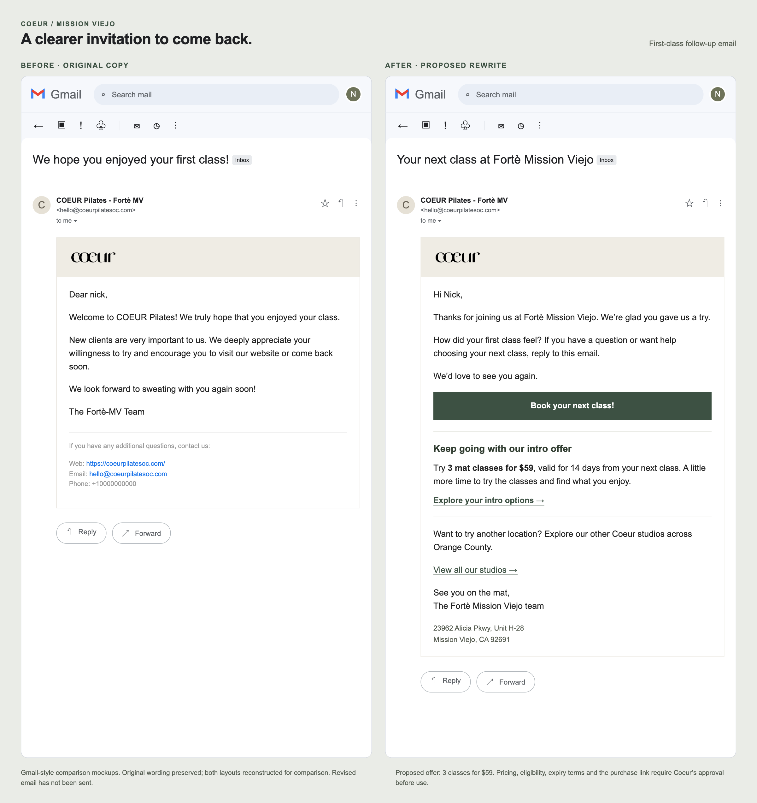
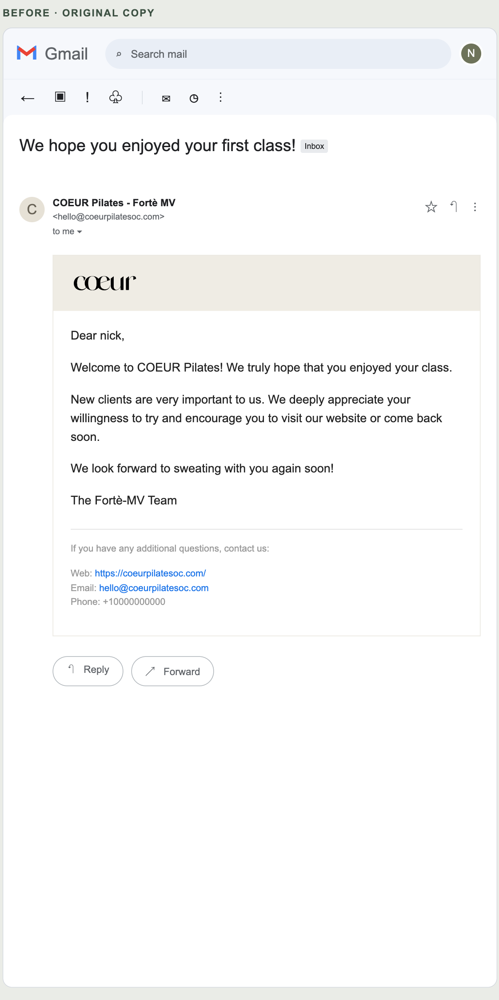
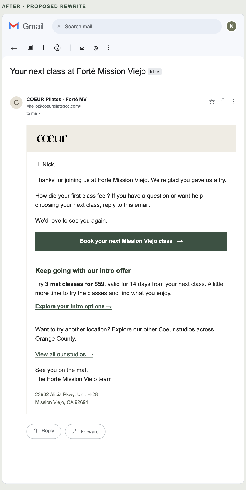

Prepared for Coeur Pilates · Mission Viejo · October 28, 2026
A clearer path from
first class to next class.
A few focused changes to make mobile booking easier to read, make selecting a spot easier, and give new clients a useful next step after class.
After trying Fortè in Mission Viejo, I put together these examples of how the website and follow-up email could work a little harder for the studio. The idea is to keep Coeur’s identity and content while making the practical details easier to use.
Design proposal by Nick Glenny. Coeur’s live website and email automations have not been changed.
Choose your spot without zooming in.
The Xplor spot-selection map leaves much of the screen unused, with small numbers and a key hidden behind a separate action. This concept gives the map the full page, makes each spot easier to read and tap, and keeps the key visible while choosing.
What changes
- A full-page map with larger numbered spots and bold, high-contrast text.
- An always-visible key for available, unavailable, selected and guest spots.
- Clear selection feedback using color, a checkmark and a guest label.
- A fixed selection summary and a review step before continuing.
- The original spot numbering and instructor position are preserved.
Try selecting a spot, adding a guest and reviewing both selections. This concept does not reserve a spot or take payment. A production version would need to connect to Xplor’s live inventory and booking flow.
Read the class. Find the time.
The embedded schedule’s thin lettering and faded past-class rows are difficult to scan on a phone. The new interface uses bold, non-italic class names and times, darker instructor details, and clear spacing between each class.
Same classes, our own interface.
The demo displays the six classes captured from Xplor / Mariana Tek, with working All classes, Sculpt and Power filters. It does not load the original provider widget.
This is a design demonstration, not a live availability feed. Booking links open Coeur’s original booking page.
Try the new class list →First check whether the provider’s typography settings can deliver the simpler fix. A fully custom class interface would need a supported data connection and verified booking, sign-in and payment flows before launch.
Give the welcome a next step.
The original email is friendly, but directs clients to the general website. The rewrite adds a Mission Viejo booking button, a reply invitation, a proposed intro offer and a link to explore the other studios.





Read the revised email
Subject: Your next class at Fortè Mission Viejo
Hi Nick,
Thanks for joining us at Fortè Mission Viejo. We’re glad you gave us a try.
How did your first class feel? If you have a question or want help choosing your next class, reply to this email.
We’d love to see you again.
Book your next Mission Viejo class →
Keep going with our intro offer
Try 3 mat classes for $59, valid for 14 days from your next class. A little more time to try the classes and find what you enjoy.
Want to try another location? Explore our other Coeur studios across Orange County.
See you on the mat,
The Fortè Mission Viejo team
23962 Alicia Pkwy, Unit H-28
Mission Viejo, CA 92691
Check the automation timing, too.
The reservation listed an 11:30 a.m. class start, but the first-class follow-up arrived at 11:32 a.m. This suggests checking the trigger. Send it after the class ends and attendance is confirmed, then skip rebooking reminders once the client has already reserved again.
The emails also show a placeholder phone number, +10000000000, and the reservation uses “Pilates Instructor” as the instructor name. Replace those with verified details. Add the studio address, directions and a manage-booking link to the confirmation.
A small, practical first release.
Start with readable class details and a clearer spot-selection map. Then update the follow-up email and test the full journey on a phone.
- Offer: approve or replace the proposed 3-for-$59 intro, including who qualifies and when credits expire.
- Booking provider: confirm access to typography settings and the supported integration options.
- Automation: verify the actual class-end and attendance triggers, rather than relying on the email timestamps alone.
- Studio details: confirm the published address, contact information and instructor labels.
- Before launch: test current availability, class selection, sign-in, payment, confirmation and cancellation. The demo does not verify these transactions.
Examples were reviewed and captured on October 28, 2026. No conversion lift or revenue result is claimed; these are proposed usability and follow-up improvements.